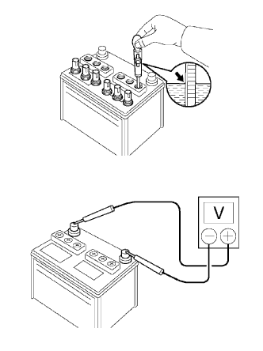

DTC P1602/A7 Battery Deterioration |
| DTC No. SAE | DTC Detection Conditions 1. Diagnosis conditions 2. Malfunction status 3. Malfunction duration 4. Other | Inspection Area |
|---|---|---|
| P1602/A7 | 1. Engine running (except during cranking) 2. When battery capacity is abnormally low 3.10 seconds or more 4.1 trip |
|
| Step 1 | Inspect Battery |
Inspect Fluid Level
Inspect Specific Gravity
 |
Inspect the battery specific gravity of each cell.
Voltage Inspection
Measure the battery voltage during cranking.
|
| ||||
| OK | ||
| ||